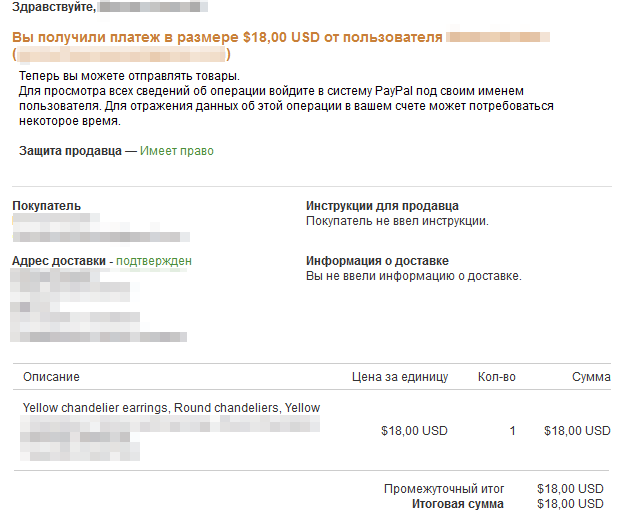
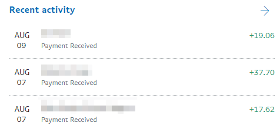
Как узнать, что оплата покупателя прошла
Для этого зайдите в свой Paypal аккаунт. На главной странице в разделе Recent
activity будет список последних операций по кошельку – включая все оплаты.
Они обозначаются знаком плюс и суммой оплаты (уже за вычетом комиссии
Пайпал).
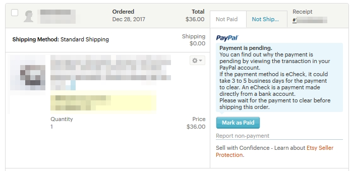
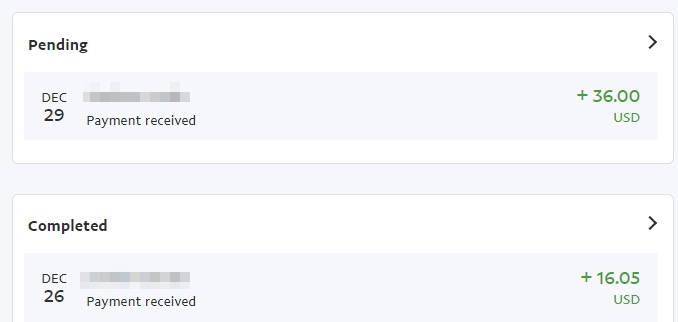
Что означает Payment is pending
Если вы видите в заказе надпись Payment is pending, это означает, что покупа-
тель оплатил ваш товар, но деньги на PayPal ещё не поступили. Такое бывает,
например, в том случае, если оплата была напрямую с банковского счёта.
В Пайпале такие платежи попадают в категорию Pending и находятся вверху
страницы истории платежей. Деньги обычно зачисляются в течение 3-5 дней
рабочих дней.
И PayPal, и Etsy советуют не отправлять заказ, пока деньги не поступят на счёт.
Как только это произойдёт, заказ автоматически отметится, как оплаченный.
И не забудьте написать покупателю о сложившейся ситуации, так как он может
ждать отправку в указанные вами сроки, а вы пока этого сделать не можете.
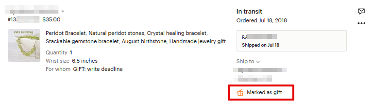
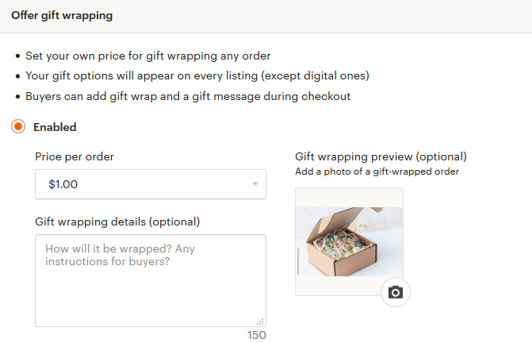
Что означает надпись Marked as gift
В некоторых заказах под адресом клиента может стоять отметка Marked as gift.
Это означает, что покупатель просит не указывать в инвойсе (который можно
распечатать и вложить в посылку) стоимость товаров.
А вот упаковывать товар «по-праздничному» не нужно, для этого существует
отдельный пункт.
Как предложить покупателям подарочную упаковку
Вы можете предоставить покупателю дополнительную опцию – упаковать заказ
в подарочную упаковку за дополнительную плату.
Чтобы включить эту настройку, перейдите в раздел Settings – Options, пункт Offer
gift wrapping и выберите вариант Enabled.
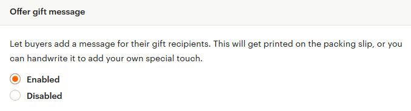
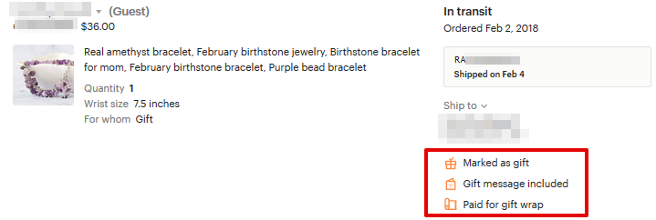
Здесь можно указать стоимость подарочной упаковки (от 1 до 5 долларов) и
текстовое описание для покупателей (как это будет выглядеть). Также вы мо-
жете загрузить фотографию готовой подарочной упаковки.
Обращаю внимание, что стоимость упаковки указывается за весь заказ, а не за
каждый товар в заказе. Если у вас заказали, например, 3 товара за раз, а стои-
мость подарочной упаковки равна 2 долларам, то клиент сверх стоимости то-
варов заплатит только 2 доллара, а не 6 (три раза по два доллара).
Также нельзя сделать разную стоимость подарочной упаковки для разных то-
варов (например, крупногабаритных и маленьких).
На подарочную упаковку также распространяется 5% комиссия Etsy с продажи.
Чуть ниже пункта Offer gift wrapping есть ещё одна настройка для подарочных
заказов – Offer gift message.
По умолчанию она включена и означает, что покупатель может попросить вас
написать специальный текст в поздравительной записке. Эта услуга бесплатна
для покупателей. Записку можно распечатать с сайта Этси или написать вруч-
ную (как вам удобнее).
Заказ, в котором покупатель попросил празднично упаковать заказ, выглядит
следующим образом:
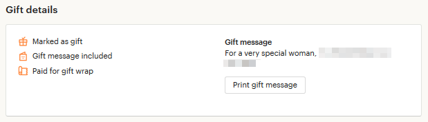
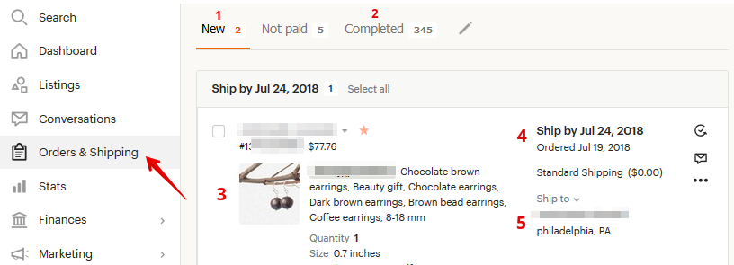
• Marked as gift – не указывать цену в инвойсе
• Gift message included – указан текст записки
• Paid for gift wrap – покупатель заплатил за подарочную упаковку
Чтобы увидеть текст поздравительной записки, нужно нажать на заказ – справа
откроется колонка с дополнительной информацией. Прокрутите её вниз до
блока Gift details. Текст записки написан под фразой Gift message.
Каков порядок действий после оплаты
Если вы продаёте цифровые товары, то после оплаты ничего дополнительно
делать не нужно – файлы будут автоматически доступны покупателю.
Если же у вас физические товары, то ваша работа только начинается.
Этап 1 – смотрим детали заказа
Переходим в раздел Shop Manager – Orders & Shipping и находим новый заказ.
Поле 1: новые заказы (New)
В этой вкладке находятся все заказы, которые ещё вами не обработаны.
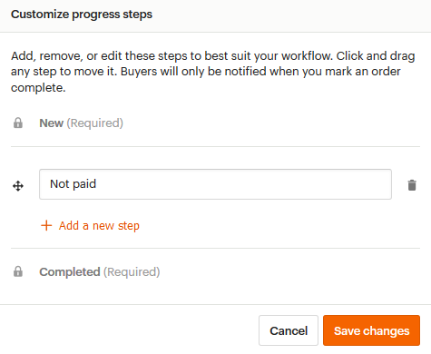
Поле 2: выполненные заказы (Completed)
В этой вкладке хранится список всех выполненных заказов (которые вы уже
отправили покупателям).
Помимо этих двух вкладок вы можете создать дополнительные, если нажать на
значок карандаша справа от Completed. Например, можно создать вкладку “В
работе”, куда вы перенесёте заказы из New, выполнение которых уже начали.
Поле 3: список заказанных листингов
Здесь можно посмотреть все товары, которые у вас купили, их количество, а
также общую сумму заказа.
Поле 4: даты заказа и отправки
Вспомнить, в какой день заказали товар, можно по строке Ordered. А день, до
которого нужно отправить заказ, находится в строке Ship by. В моём примере
заказали 19 июля, а нужно отправить до 24 июля (включительно).
Поле 5: адрес доставки
Здесь указано имя и фамилия получателя посылки, а также его почтовый адрес.
Если вы нажмёте в любом месте на заказ, то справа откроется окно с дополни-
тельной информацией.
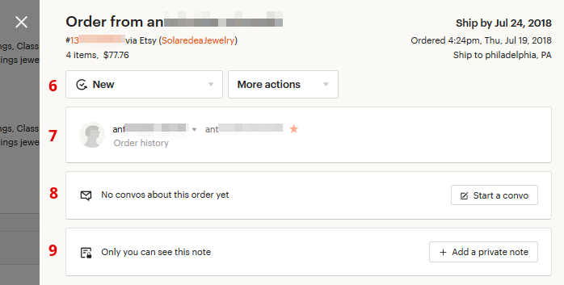
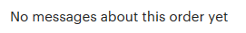
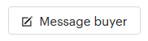
Поле 6: действия с заказом
Здесь можно перенести его в другую вкладку/статус (то есть выбрать вместо
New что-то другое), а также выполнить ряд других действий (More actions):
• Print – распечатать инвойс
• Update ship by date – изменить дату отправки
• Mark as a gift – отметить как подарок (чтобы в инвойсе не было цен)
• Mark as not paid –отметить, как неоплаченный
• Cancel — отменить заказ
Поле 7: информация о покупателе
Здесь указано имя клиента, а также его никнейм на Etsy.
Если нажать на стрелочку, направленную вниз, то откроется дополнительная
информация. Здесь можно посмотреть электронную почту покупателя.
Под именем покупателя есть ссылка Order history — с её помощью можно быстро
найти все заказы данного клиента.
О том, что это повторный клиент, указывает значок звёздочки справа от ник-
нейма.
Поле 8: общение с покупателем
Если нажать кнопку Message buyer, то можно начать диалог с покупателем.
Например, сказать, что его заказ отправлен или задать уточняющие вопросы.
Поле 9: заметки о заказе
Если вы хотите сделать какие-то пометки к этому заказу, то напишите их здесь.
Покупатель их не увидит – они будут доступны только вам. Для создания за-
метки нажмите кнопку Add a private note.
Этап 2 – упаковка товара
Так как вашей посылке предстоит долгий перелёт со многими остановочными
пунктами (сортировки, таможни и т.п.), то упаковать всё стоит понадёжнее. Так,
чтобы защитить товар от возможных повреждений.
Для этих целей я покупаю в строительном магазине пузырчатую пленку, кото-
рой обворачиваю коробку с товаром. Только учтите, что на почте иногда попро-
сят показать содержимое посылки – поэтому не упаковывайте всё дома.
Не забывайте и о сроках отправки – Processing time. Они указываются у каждого
листинга отдельно (или в нужном Shipping Profile).
Этап 3 – подготовка коробки/конверта
Лучше всего заранее купить почтовую коробку или пластиковый пакет в своём
отделении почты, что спокойно подписать их дома.
Также можно поискать в вашем городе фирмы и интернет-магазины, которые
продают почтовые упаковки – нередко бывает, что у них они стоят даже де-
шевле, чем на самой почте.
Обращаю внимание, что на Почте России можно отправлять посылку только в
коробке, на которой нет никаких надписей (кроме адреса). А также отсутствуют
остатки канцелярского скотча. Мне обосновали это тем, что так коробку можно
легко и незаметно вскрыть (просто отклеить почтовый скотч от обычного, а за-
тем приклеить снова).
По поводы работы сотрудников почтовых служб и их требований – тут как по-
везёт. «Правила» в каждом почтовом отделении могут слегка отличаться. Порой
они разнятся даже у разных смен в одном отделении. Поэтому я в своё время
решила ходить в конкретное отделение, где требования ко мне были примерно
одинаковыми – чтобы каждый раз не нервничать по этому поводу.
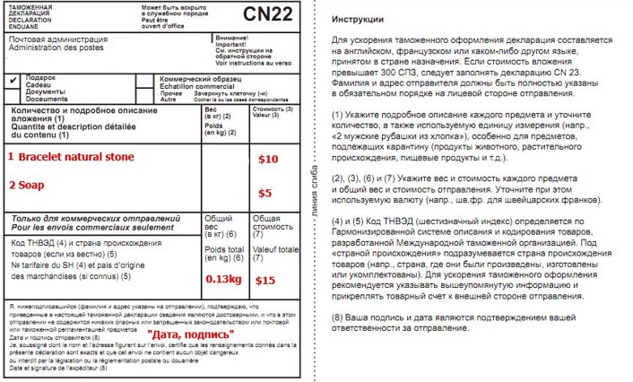
Что касается Почты России (так как я живу в России, то опыт у меня есть только
от взаимодействия с этой почтовой службой). Для отправки вам нужно будет
заполнить небольшой бланк таможенной декларации CN22. В ней указывается
всё содержимое отправления, вес каждого товара (чаще всего сотрудники по-
чты заполняют это сами), ценность, а также тип отправления (подарок, коммер-
ческие образец, документ). Тип отправления я чаще всего указываю «подарок».
Если объявленная ценность больше 300 СПЗ (международная почтовая денеж-
ная единица, примерно 430 долларов), то также необходимо заполнить декла-
рацию CN23. Однако многие сотрудники почты об этом не знают и требуют эту
декларацию в любом случае.
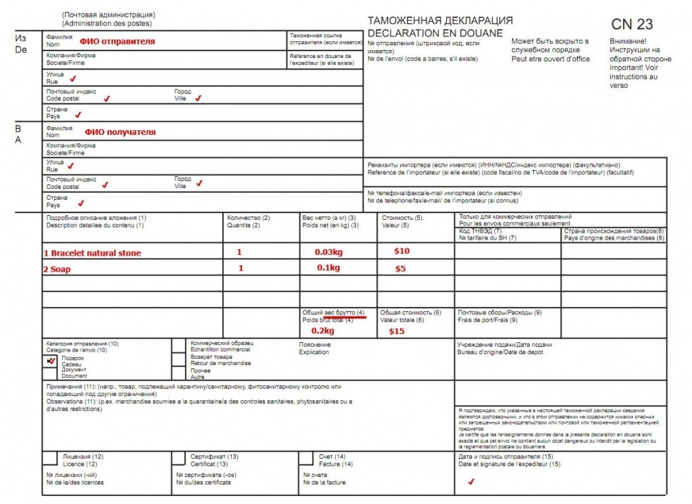
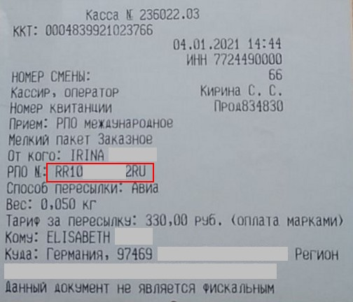
Бланки деклараций можно скачать с сайта Почты России или попросить в вашем
почтовом отделении.
https://www.pochta.ru/support/parcels/small-package
Этап 4 – получаем квитанцию об оплате с трек-номером
На чеке от оператора уже проставлен трек-номер, который необходимо сооб-
щить вашему клиенту.